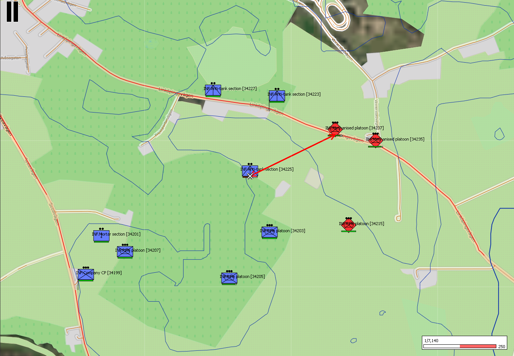
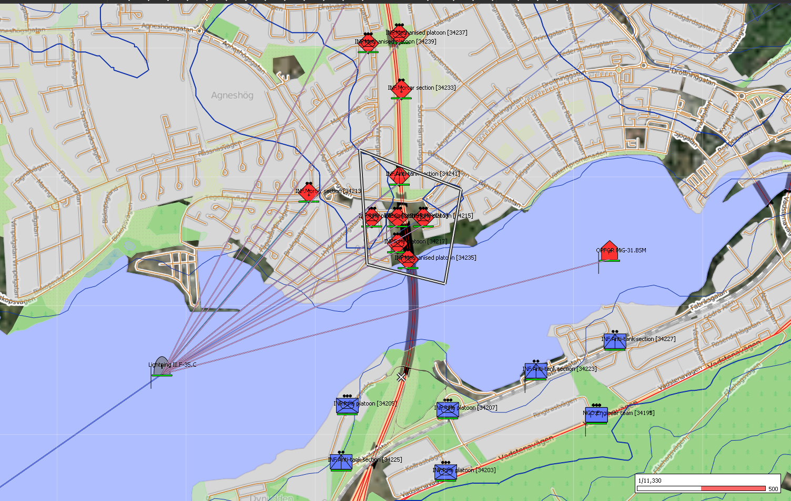

Applications
Field-deployable software and smart defence applications for electronic devices and operational use.
Explore →Modelling & Training
Simulation environments, 3D modelling, training hardware, and exercise delivery.
Explore →Battlefield Image Recognition
Real-time AI-powered image recognition and target classification for field-deployed hardware. Designed for drones, smart optics, handheld devices, and embedded platforms operating in degraded or offline environments.
A combined capability demonstrator bringing together the previous Threat Identification System and Battlefield Image Recognition concepts into one portfolio item. The system demonstrates local image classification, target recognition, and operator-facing confidence feedback without exposing the underlying technical implementation.
Intended use cases include smart optics, drones, rugged tablets, embedded sensors, and other edge devices where rapid recognition and decision support are required without relying on cloud connectivity.
Battlefield Image Recognition Demonstrator
Battlefield Casualty Management
A smart field tool for casualty tracking, triage, and reporting. Structured triage assessment, condition-specific treatment guidance, and automated casualty reporting - designed for use without network connectivity.
A mobile-first casualty management and reporting application for field conditions without network connectivity. Covers structured casualty assessment, treatment drill guidance, multi-casualty handling, automated MIST reporting, and 9-Line MEDEVAC generation.
Designed to reduce cognitive load at point of injury by guiding users through casualty capture, triage ordering, treatment prompts, and evacuation reporting from one structured workflow.
Battlefield Casualty Management Demonstrator
Rapid Prototyping & Consulting
Rapid concept-to-demonstrator delivery for Defence and Government clients. As a resourceful, strategic, and agile SME, we move quickly from idea to working software, physical prototype, or capability demonstrator without unnecessary corporate process or internal overhead.
Setter Industries provides agile prototyping and technical consulting for Defence and Government clients, combining software engineering, physical prototyping, CAD design, 3D printing, and capability demonstrator development. As an SME, we are resourceful, strategic, and able to move quickly without the corporate tape, internal process layers, and management overhead that can slow larger organisations.
Our capability covers physical prototyping, including CAD design, 3D printing, proof-of-concept hardware, and demonstrator fabrication, alongside software development, application builds, user interface development, requirements validation, and technical feasibility work.
We support requirements scoping, technical advisory, and early-stage prototype delivery to de-risk procurement decisions early in the programme cycle. The aim is simple: move from concept to working demonstrator quickly, professionally, and cost-effectively.
Wargaming Development & Support
Scenario development, data collation, model implementation, and exercise support for military wargaming and simulation environments, including MASA SWORD and VBS-style training workflows.
Wargaming development and support covering scenario build, source data collation, model configuration, parameter validation, and exercise preparation. This capability is suited to MASA SWORD, VBS-style training environments, and wider military simulation workflows where structured data, scenario logic, and model behaviour need to be prepared for training, analysis, or experimentation.
The images below show example MASA SWORD style outputs and demonstrate the type of wargaming environment, force layout, and scenario visualisation this capability can support.



3D Asset Creation & Modelling
3D asset creation for simulation environments, architectural visualisation, and training systems. Built in Blender and CAD tools with full texture mapping and simulation-ready optimisation.
3D modelling capability covering architectural models, military asset models, environmental assets, and simulation-ready entities. All models are fully textured and optimised for real-time simulation performance. Assets have been delivered for integration into VBS4, Unity, and Unreal Engine environments.
3D Model Viewer — Maisonette (Architectural)
InteractiveSky Scanner ADS-B Feed Tool
Live ADS-B aviation data ingested and fed as DIS-compliant air entities into synthetic training scenarios, increasing scenario fidelity without adding controller workload.
Captures and processes live ADS-B transponder data from commercial aviation and feeds this into simulation environments as DIS-compliant air entities, creating realistic and dynamic airspace within training scenarios at minimal cost and with no additional controller overhead.
VR / AR Training Systems
Procurement, installation, integration, and deployment of immersive VR and AR training hardware with instructor-facing controls and training environment setup.
End-to-end delivery covering platform selection, procurement, hardware installation and integration, software configuration, training environment deployment, and instructor tool setup. Compatible with existing simulation platforms where DIS or other interoperability standards are supported.